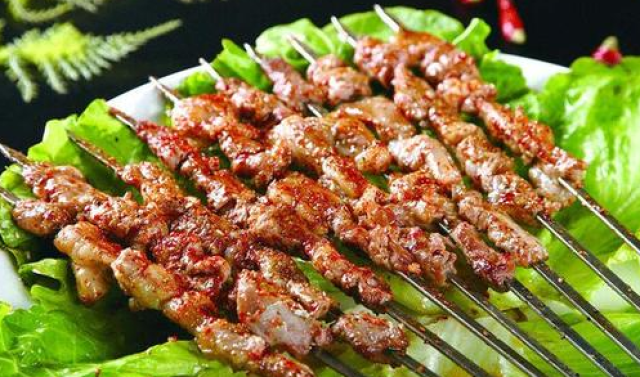
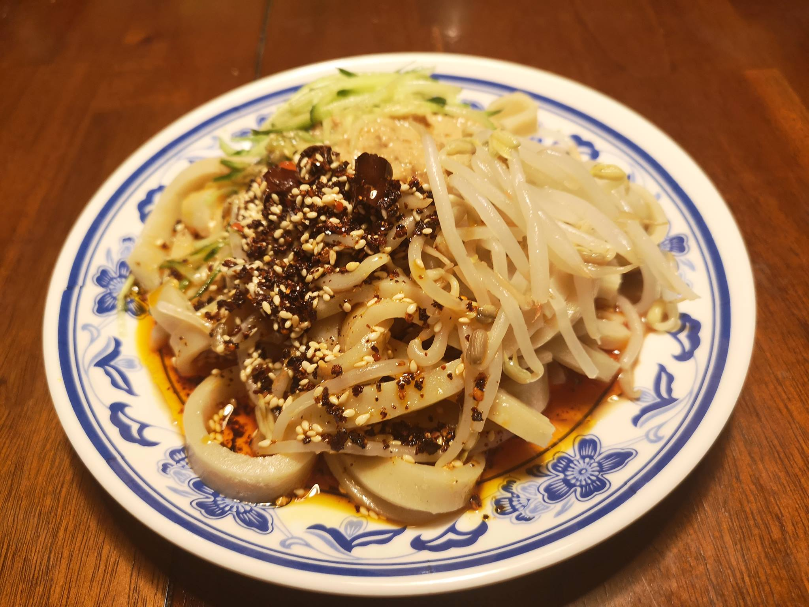

Top 3 Food in Lanzhou
Lanzhou Lamian (Hand-Pulled Noodles)

Introduction
Lanzhou Lamian is Lanzhou’s most famous dish—hand-pulled wheat noodles served in a clear, savory broth with sliced beef, green onions, and cilantro. The magic is in the noodles: skilled chefs pull the dough into thin, uniform strands (sometimes up to 8 times, creating hundreds of noodles) right in front of you. The broth is made by simmering beef bones and meat with star anise, ginger, and Sichuan peppercorns for hours—clear but rich with flavor. It’s usually served “plain” (just noodles and broth) or with extra toppings like pickled mustard greens or chili oil. In Lanzhou, eating Lamian is a daily ritual—locals often have it for breakfast or lunch, and stalls are open from early morning to late night.
Taste
Noodles: Chewy, springy, and tender—each strand is evenly coated with broth.
Broth: Clear, savory, and light—no greasiness, just pure beef flavor with a hint of spices.
Beef: Thinly sliced, tender, and lean—cooked just enough to stay juicy.
Overall: Simple, comforting, and satisfying—perfect for any meal.
Price
Local Stalls: 8–12 CNY/bowl (standard size, with beef).
Famous Lamian Shops: 15–20 CNY/bowl (larger portion, with extra beef or toppings).
Airport/Railway Station Shops: 20–30 CNY/bowl (higher price, but still authentic).
Roasted Lamb Skewers (Kao Yangrou Chuan)

Introduction
Roasted Lamb Skewers are a beloved Lanzhou street food—small pieces of lamb (usually from the leg or shoulder) skewered on bamboo sticks, grilled over charcoal, and seasoned with cumin, chili powder, and salt. Lanzhou’s lamb is known for being tender and non-gamey (thanks to the region’s pastures), making it perfect for grilling. The skewers are cooked quickly (2–3 minutes per side) to keep the lamb juicy, with a slightly charred exterior that adds smoky flavor. You’ll find vendors selling them on almost every street corner, especially in the evening—locals often pair them with cold beer or soda. They’re a must-try for anyone who loves savory, spicy street food.
Taste
Lamb: Tender, juicy, and mild—no gamey aftertaste; the charcoal grill adds a smoky aroma.
Seasoning: Cumin adds earthy flavor, chili powder adds a mild kick, and salt enhances the lamb’s natural taste.
Texture: Slightly charred on the outside, tender on the inside—perfect contrast.
Overall: Addictive, portable, and full of flavor—ideal for a late-night snack.
Price
Street Stalls: 2–3 CNY/skewer (10–15 skewers make a full meal for one person).
Night Markets: 3–4 CNY/skewer (often sold in batches of 5 or 10, with discounts).
Local Restaurants: 4–6 CNY/skewer (larger portions of lamb, served with side dishes like grilled vegetables).
Sweet Fermented Rice Soup (Tangyuan Niangao Tang / Tian Niang Pi)

Introduction
Sweet Fermented Rice Soup is a warm, comforting Lanzhou dessert—made with fermented glutinous rice (called “niangao”), water or broth, and topped with raisins, goji berries, or small rice dumplings (“tangyuan”). The fermentation process gives the rice a slightly sweet, mild alcoholic flavor (with very low alcohol content, safe for all ages) and a soft, chewy texture. It’s typically simmered gently to create a thick, creamy soup that’s perfect for cool evenings or as a post-meal treat. Locals love it for its soothing taste—warm enough to calm the stomach (especially after spicy food like Lamian) and sweet enough to satisfy cravings without being cloying. It’s a staple at breakfast stalls and dessert shops across Lanzhou.
Taste
Fermented Rice: Soft, chewy, and slightly sweet—with a subtle tang from fermentation; no harsh alcohol taste.
Soup: Warm, creamy, and mild—absorbs the rice’s sweetness, with a hint of floral aroma from goji berries.
Toppings: Raisins add a burst of sweetness, goji berries add a mild tartness, and rice dumplings add extra chewiness.
Overall: Comforting, gentle, and warming—like a hug in a bowl, perfect for cool weather.
Price
Breakfast Stalls: 6–8 CNY/bowl (basic version with raisins and goji berries).
Dessert Shops: 10–15 CNY/bowl (premium version with handmade tangyuan and extra toppings like red dates).
Restaurants: 8–12 CNY/bowl (served as a dessert after meals, often complimentary with large orders).